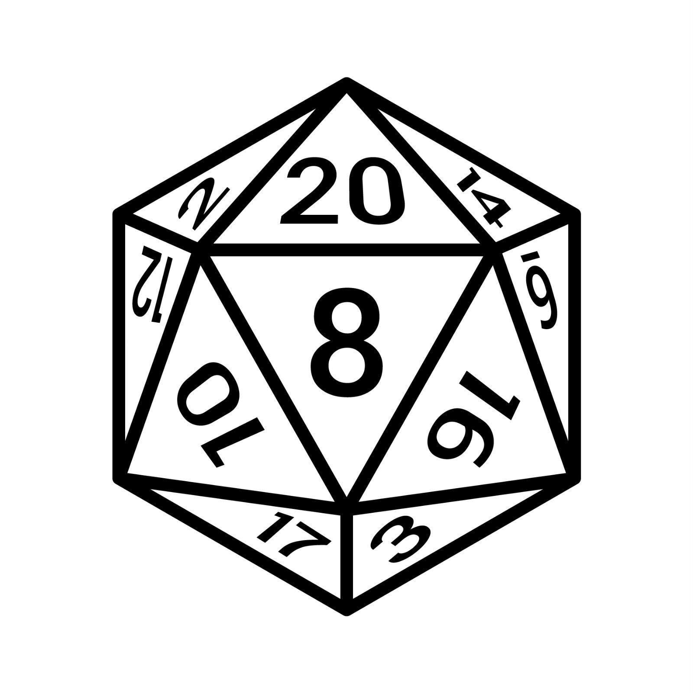

Dungeons & Dragons is the world’s most popular tabletop roleplaying game. It is a cooperative, storytelling game where you and other players take on the roles of different characters within a story. As you play, your character will make friends and enemies, fight monsters, discover loot, and complete quests.
But while the goal of many games is to score the most points or win, the ultimate goal of D&D is to tell a story. There are dice and Basic Rules involved, and often maps and miniatures or tokens, but the tools that come into play most often are the imaginations of the players.
Whether you’re discovering the game after watching Dungeons & Dragons: Honor Among Thieves or your friends have invited you to take a seat at their gaming table, understanding how D&D works can be daunting.
A typical D&D game consists of a handful of players and a Dungeon Master (DM). The players each take on the role of an adventurer character they create, while the DM manages the narrative of the story.
The DM presents information about the adventure to players, which includes things like:
-  Where the adventurers are
- Narrating actions that occur around them
- Describing obstacles or puzzles that may be in their path
- Roleplaying as the supporting characters in the story, usually referred to as non-player characters (NPCs)
Players use character sheets, which are a compilation of stats that represent all the things that their adventurers can do to interact with their environment. This can include things such as:
- Basic attributes like how intelligent or strong the character is
- Things they’re skilled at, such as Investigation or Persuasion
- Actions such as attacking with weapons or casting spells
- Languages the character speaks or tools they know how to use
When the DM has described a setting and any given challenges, the players will describe the things their characters do. The DM will then determine what the implications of the player's actions are. They may be asked to roll dice to see if they succeed, or allow them to narrate the action and allow the story to continue. The player’s roll is usually modified based on the skills in their character sheet. DMs also roll dice if the narrative calls for it, such as for NPCs, monsters, or traps. This process in general is how all stories in D&D unfold, whether adventurers are snooping around in the dimly lit rooms of a dungeon, locked in heated combat with monsters, or even eavesdropping in on secret conversations while gatecrashing a gala.
Join our mailing list for news about upcoming events.